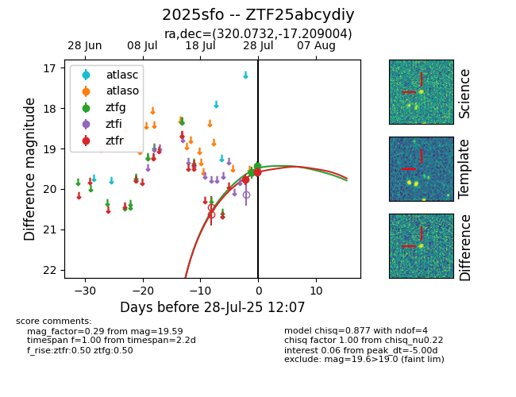

Target 2025sfo at 2025-08-19 21:27, see:
FINK: fink-portal.org/ZTF25abcydiy
Lasair: lasair-ztf.lsst.ac.uk/objects/ZTF25abcydiy
ALeRCE: alerce.online/object/ZTF25abcydiy
TNS: wis-tns.org/object/2025sfo
YSE: ziggy.ucolick.org/yse/transient_detail/2025sfo
alt names
ZTF25abcydiy (ztf,fink)
2025sfo (tns,yse)
ATLAS25iol (atlas)
PS25frs (panstarrs)
coordinates:
equatorial (ra, dec) = (320.0732,-17.20900)
galactic (l, b) = (32.9408,-40.47117)
photometry
last atlaso=18.60, ps1::w=18.79, ztfg=18.69, ztfr=18.79
2 atlaso, 8 ps1::w, 22 ztfg, 24 ztfr detections
